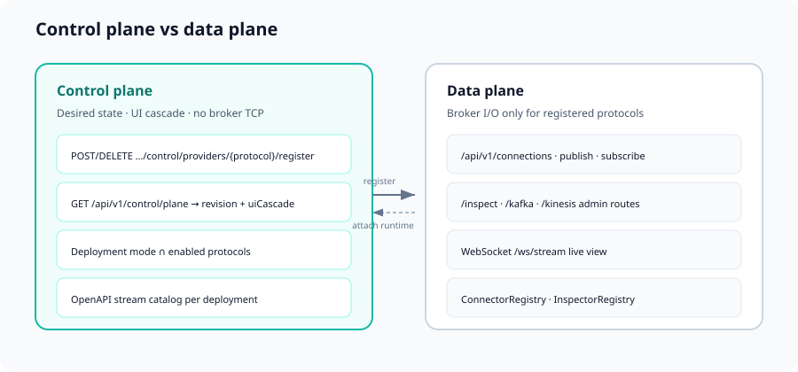

Control plane & data plane
How registration, UI metadata, and broker I/O are separated.

Eventore separates desired state and UI metadata (control plane) from broker I/O (data plane), similar to Kubernetes, Istio, or cloud networking stacks.
Control plane
| Responsibility | Examples |
|---|---|
| Register / deregister providers | POST/DELETE /api/v1/control/providers/{protocol}/register |
| UI capabilities | inspect, admin, messaging, OpenAPI stream ids |
| Client snapshot | GET /api/v1/control/plane (revisioned) |
| Policy | DEV allowed-protocols ∩ registered providers |
Does not open TCP connections to Kafka, Kinesis, or other brokers.
Bootstrap
When eventore.control-plane.auto-register-on-startup: true, providers matching eventore.enabled-protocols (or all on classpath) register at startup.
Data plane
| Responsibility | Examples |
|---|---|
| Destinations, publish, subscribe | /api/v1/connections/{id}/... |
| Inspect & admin | /inspect, /kafka, /kinesis |
| Live view | WebSocket /ws/stream |
Routes succeed only when the connection protocol is registered in the control plane.
UI cascade
GET /api/v1/config embeds controlPlane.uiCascade:
connectionProtocols— connection forminspectProtocols— inspector tabsadminProtocols— Kafka admin, etc.platformFilterProtocols— platform presets
Frontend: useControlPlane() prefers /control/plane, falls back to embedded config.
MCP and the planes
The optional MCP server mirrors this split:
- Control plane —
eventore_get_control_plane,eventore_register_provider, resourceseventore://control-plane - Data plane — connections, publish, SSE consume, inspect, Kafka admin tools
Agents should read GET /config and GET /control/plane before creating connections. Details: MCP for AI agents.
Configuration
eventore:
control-plane:
auto-register-on-startup: true
data-plane:
require-control-plane-registration: trueSee also Architecture and Configuration.